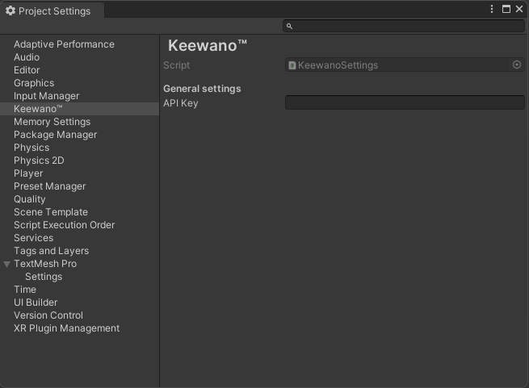

|
Keewano Unity SDK
|
|
Keewano Unity SDK
|
Sending events to Keewano is easy, this guide will show you how to do it with our SDK.
Open Unity project settings for Keewano Edit > Project Settings > Keewano.
Enter your project's API key. You can find this information here

Associate your in-game user id with current game installation to help Keewano identify your users.
For your convenience two overloads are available, one for games that use numeric user ids, and one for games that use Guids.
The KeewanoSDK will start automatically reporting some events but we also recommend you to add manual and custom events to give the Keewano AI Agents more knowledge about your specific player behaviors.
By default, the Keewano SDK is fully compliant with privacy regulations and does not collect any personally identifiable information (PII). No additional setup is required—analytics data will be collected automatically, without exposing user PII, in accordance with our privacy policy.
If your project demands explicit player consent before any analytics data is sent, see Data Privacy.
By default, the Keewano SDK automatically captures all Unity UI button click events to provide the AI Analyst with valuable context about user behavior. However, if needed, you can disable this automatic tracking by checking the Disable Button Tracking option.